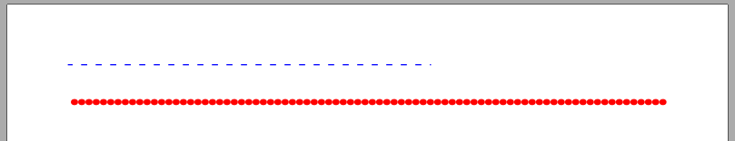

Creating Line
Brief
The article describes how to create a Line.
Details
Library allows you to add a Line
and set it's Width,
Style,
Color and Length.
Line extension methods are described in LineBuilder.
Method AddLine creates a new Line and returns it.
Then you can set line's properties using
SetWidth,
SetLength,
SetColor,
SetStyle (None, Solid, Dashed, Dotted, Double)
ContentItem extension methods from ContentItemBuilder,
such as SetMargins, are also available for the line.
See also:
Examples
Creating Line [hide]
var s = builder.AddDefaultSection();
s.AddLine().SetWidth(1f).SetLength(300).SetColor(Color.Blue).SetStyle(Stroke.Dashed).SetMargins(top: 0, left: 0, right: 0, bottom: 30);
s.AddLine().SetWidth(5f).SetColor(Color.Red).SetStyle(Stroke.Dotted);
The code above will generate you the following:

Line configurer [show]